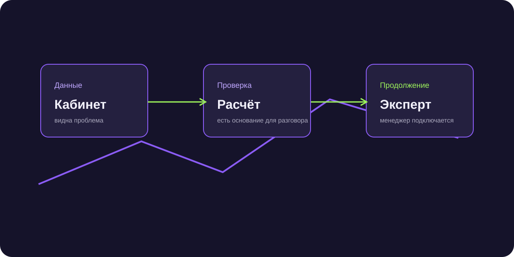

Возврат денег с маркетплейсов: как находить продавцов для сервиса
Возврат денег с маркетплейсов начинался с аналитики кабинета. Воронка доводила заинтересованных продавцов Wildberries и Ozon до эксперта.

Короткий ответ
Для сложной услуги с оплатой за результат лучше начинать с проверяемого сигнала. Продавцу показывали возможные потери в кабинете, затем AI уточнял оборот, площадки и готовность к проверке.
Задача проекта
Нужно было находить продавцов Wildberries и Ozon, которым актуальна проверка скрытых потерь, и передавать эксперту диалоги с понятным контекстом. В первом сообщении не отправляли длинную презентацию и не обещали возврат без проверки.
Как собирали аудиторию
Команда проверила несколько источников: базы компаний, сегментацию продавцов по обороту и активные Telegram-чаты. Большой массив контактов оказался сырьём. Для первого диалога нужны были имя, роль и живой контекст.
Поэтому в приоритете оказались участники чатов и каналов по маркетплейсам. Они уже обсуждали поставки, отчёты и проблемы с кабинетами. Сообщение можно было привязать к этой ситуации, а не к абстрактной услуге.
Как шёл диалог
Первое касание было коротким: имя и вопрос по теме маркетплейсов. После ответа AI просил ссылку на магазин, уточнял масштаб продавца и опыт прошлых проверок, затем предлагал бесплатную оценку потенциальных потерь.
Контекст вместо голого контакта
Площадка, примерный масштаб, интерес к проверке, согласованный способ связи и следующий шаг. Менеджер видел, кому писать первым и с чего продолжать разговор.
Главный барьер: доверие
Продавец осторожно относится к обещанию вернуть деньги. Рабочим доказательством становилась собственная цифра в кабинете. Когда человек сам видел расхождение и понимал логику проверки, разговор переходил от любопытства к предметному обсуждению.
Результат
За первые семь месяцев 30-35% контактов продолжали предметный диалогов, 10% ответивших переходили в квалифицированные лиды, а в лучший месяц было 5 закрытых сделок. Крупнейший возврат в портфеле сервиса составил 45 млн ₽.
Проект продолжается, поэтому показатели могут меняться.